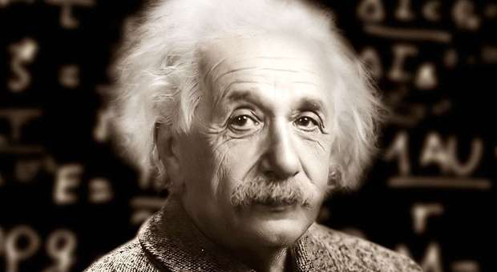

Albert Einstein
The Smartest Man Ever

Here is a Time Line of Albert Einstein:
- 1879 Born March 14 at 11:30 AM in Ulm, Germany
- 1880 Einstein family moves to Munich
- 1884 The Compass - A gift from his Uncle sparks his wonder
- 1885-1888 Pupil at Catholic elementary school in Munich & Private lessons in Judaism at home
- 1888 Pupil at Luitpold-Gymnasium, Munich for the next six years
- 1889 Meets 21 year old student, Max Talmud.
- 1892 Einstein is not Bar Mitzvahed. Technically, not a member of the Jewish community
- 1894 Parents move to Milan
- 1914 Appointed Professor at University of Berlin (without teaching obligations) and Member of Prussian Academy of Sciences Separates from his wife, Mileva Maric - she returns to Zurich with the two sons Signs anti-war "Manifesto to Europeans"
- 1921 First visit to the U.S. with Chaim Weizmann: fund-raising tour for The Hebrew University Lectures at Princeton University on theory of relativity
- 1922 Completes first paper on unified field theory Visit to Paris contributes to normalization of French-German relations Joins Committee on Intellectual Cooperation of the League of Nations Lecture tours in Japan and China Awarded Nobel Prize for Physics for 1921
- 1923 Visit to Palestine: holds inaugural scientific lecture at future site of The Hebrew University in Jerusalem, named first honorary citizen of Tel Aviv Visit to Spain Lecture in acknowledgment of Nobel Prize in Göteborg, Sweden Edits first collection of scientific papers of The Hebrew University